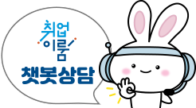

당신의 취업이룸을 응원합니다.
더 나은 일자리를 구하도록 제공합니다. 취업이룸에서 이루세요
맞춤형 취업지원소득지원 혜택까지
더 나은 일자리를 구하도록 제공합니다.취업이룸에서 이루세요
2021년 1월 1일 「구직자 취업촉진 및 생활안정지원에 관한 법률」에 근거하여 한국형 실업부조 ‘국민취업지원제도’가 시행되었습니다.
국민취업지원제도
지원 대상
지원 내용
지원 신청
지원 절차
의무와 제재
취업지원 및생계안정 지원
취업지원프로그램
일경험프로그램
간단하게 항목에 입력으로 수급대상자 여부를 확인

1350 (유료)
2024-02-08
2024-01-25
2024-01-24
2023-10-18
2023-08-24
2023-08-17
2023-08-02
2023-11-13
2023-07-27
2023-02-03
취업지원 참여 신청
신청 현황
취업활동 계획이행관리
참여 현황관리
취업성공수당 관리
일경험프로그램참여기업조회
일경험프로그램참여신청
📌[취업으로 가는길 국.취.로] 국민취업지원제도 소식지 제6호 발간 안내
📌[취업으로 가는길 국.취.로] 국민취업지원제도 소식지 제5호 발간 안내
📌[취업으로가는길 국·취·로] 국민취업지원제도 소식지 제4호 발간